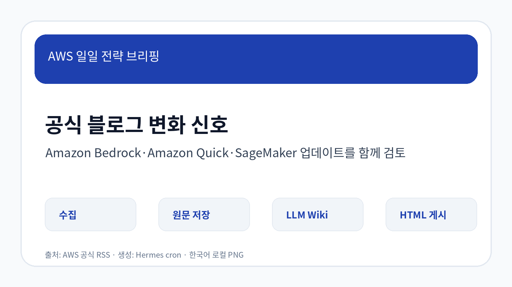
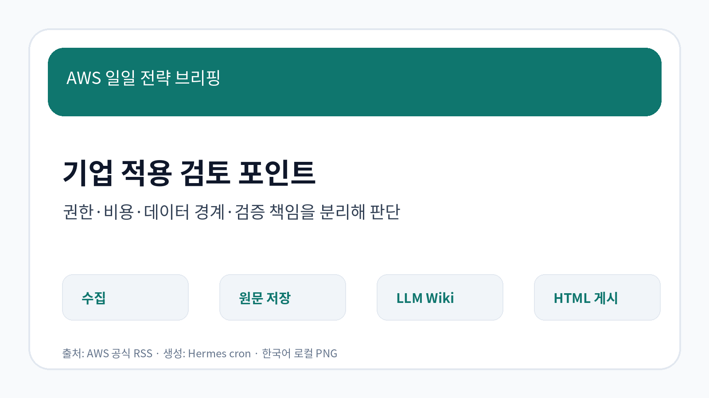
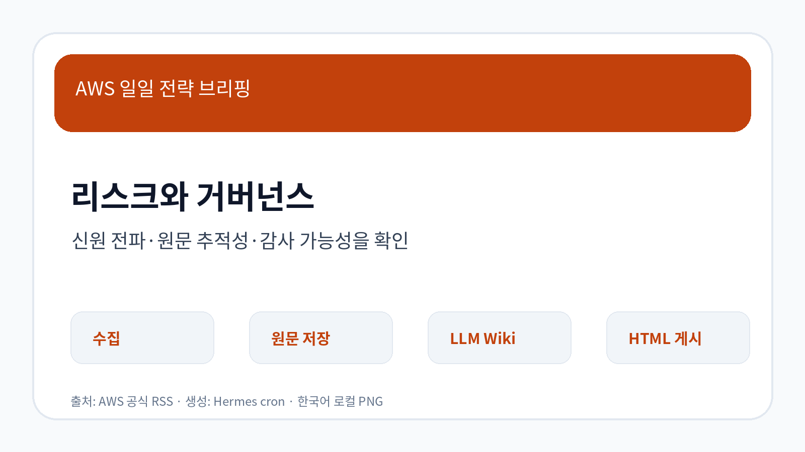

Amazon Bedrock에서 GPT-6.1 Sol 제공 확대와 업무형 추론 검토 포인트
출처: AWS 머신러닝 블로그 · 게시: 2026-09-30 · 분류: AI/ML
Amazon Bedrock에 GPT-6.1 Sol이 제공되며 코딩, 컴퓨터 사용, 반복 전문 업무에 더 강한 추론 모델 선택지가 추가되었습니다.
기업은 모델 추가 자체보다 사용 빈도, 비용, 지연시간, 데이터 경계, 결과 검증 책임을 함께 비교해야 합니다.
원문 출처 열기공식 출처 기반 일일 브리핑
2026-09-30 한국시간 기준으로 신규 수집·저장·동기화한 AWS 공식 블로그를 기업 AI·데이터·클라우드 의사결정 관점에서 정리했습니다.
이번 실행에서는 Amazon Bedrock, Amazon Quick, Amazon SageMaker, 데이터 거버넌스, 생성형 콘텐츠 인프라 관련 글 8건이 신규 저장되었습니다. 판단 기준은 기능 채택 여부보다 데이터 접근 경계, 비용, 감사 가능성, 결과 검증 책임입니다.

출처: AWS 머신러닝 블로그 · 게시: 2026-09-30 · 분류: AI/ML
Amazon Bedrock에 GPT-6.1 Sol이 제공되며 코딩, 컴퓨터 사용, 반복 전문 업무에 더 강한 추론 모델 선택지가 추가되었습니다.
기업은 모델 추가 자체보다 사용 빈도, 비용, 지연시간, 데이터 경계, 결과 검증 책임을 함께 비교해야 합니다.
원문 출처 열기출처: AWS 머신러닝 블로그 · 게시: 2026-09-30 · 분류: AI/ML
Amazon Quick에서 일관된 결과를 얻기 위한 구체성, 맥락 설정, 예시 제공, 구조화 프레임워크가 정리되었습니다.
업무형 AI 도입 조직은 사용자 교육과 프롬프트 표준을 별도 운영 자산으로 관리해야 품질 편차를 줄일 수 있습니다.
원문 출처 열기출처: AWS 머신러닝 블로그 · 게시: 2026-09-30 · 분류: AI/ML
Amazon Quick Research, Flows, Sight, 채팅 에이전트, Action Integrations별로 효과적인 프롬프트 패턴과 함정이 제시되었습니다.
단일 프롬프트 가이드로 전사 적용을 끝내기보다 기능별 사용 맥락과 실패 패턴을 나눠 관리해야 합니다.
원문 출처 열기출처: AWS 머신러닝 블로그 · 게시: 2026-09-30 · 분류: AI/ML
계약서 필드 추출·검증과 포트폴리오 질의를 결합한 계약 인텔리전스 구조가 Amazon Quick과 Bedrock AgentCore로 제시되었습니다.
문서 AI를 계약·구매 영역에 적용할 때는 추출 정확도, 원문 추적성, 승인 책임, 집계 질의의 근거 제시가 핵심 통제 항목입니다.
원문 출처 열기출처: AWS 머신러닝 블로그 · 게시: 2026-09-30 · 분류: AI/ML
Condé Nast 사례는 영상 자산 탐색에 Amazon Bedrock 기반 멀티모달 분석을 적용하는 방향을 보여줍니다.
콘텐츠 자산이 많은 기업은 검색 편의성뿐 아니라 저작권, 메타데이터 품질, 권한별 접근 통제를 함께 검토해야 합니다.
원문 출처 열기출처: AWS 코리아 기술 블로그 · 게시: 2026-09-29 · 분류: AI/ML
Physical AI 모델 학습에서 시뮬레이션, SageMaker 학습 파이프라인, 엣지 추론 환경을 연결하는 구성이 소개되었습니다.
로봇·엣지 AI는 학습 인프라와 현장 배포 경계가 함께 움직이므로 GPU 비용, 모델 검증, 장애 복구 기준을 사전에 정해야 합니다.
원문 출처 열기출처: AWS 코리아 기술 블로그 · 게시: 2026-09-29 · 분류: AI/ML
무븐트 사례는 댄스 생성 AI를 위한 비정형 영상 데이터 처리, GPU 추론 분리, 글로벌 서빙 구조를 설명합니다.
생성형 콘텐츠 서비스는 모델 품질뿐 아니라 데이터 파이프라인, 비동기 추론, 사용자 증가 시 비용 탄력성이 사업 리스크를 좌우합니다.
원문 출처 열기출처: AWS 코리아 기술 블로그 · 게시: 2026-09-29 · 분류: Data/Analytics
SageMaker Studio에서 Trusted Identity Propagation과 S3 Access Grants를 활용해 사용자별 Athena 데이터 접근과 감사를 구현하는 방법이 제시되었습니다.
공유 분석 환경에서는 공용 실행 역할만으로는 감사·권한 분리가 부족하므로 사용자 단위 신원 전파와 데이터 접근 정책 검증이 필요합니다.
원문 출처 열기
Amazon Quick와 Bedrock AgentCore 관련 글은 업무 문서, 계약, 리서치, 분석 환경에 AI 기능을 연결하는 흐름을 보여줍니다.
Physical AI와 music-to-dance 사례는 GPU 학습, 비동기 추론, 엣지 배포가 함께 설계되어야 함을 보여줍니다.
SageMaker Studio의 TIP와 S3 Access Grants 글은 공유 분석 환경에서 사용자별 권한과 감사 추적이 핵심임을 보여줍니다.
| 관찰된 사실 | 근거 출처 | 검토 포인트 |
|---|---|---|
| Amazon Bedrock에 GPT-6.1 Sol이 제공되며 코딩, 컴퓨터 사용, 반복 전문 업무에 더 강한 추론 모델 선택지가 추가되었습니다. | 근거 출처 | 기업은 모델 추가 자체보다 사용 빈도, 비용, 지연시간, 데이터 경계, 결과 검증 책임을 함께 비교해야 합니다. |
| Amazon Quick에서 일관된 결과를 얻기 위한 구체성, 맥락 설정, 예시 제공, 구조화 프레임워크가 정리되었습니다. | 근거 출처 | 업무형 AI 도입 조직은 사용자 교육과 프롬프트 표준을 별도 운영 자산으로 관리해야 품질 편차를 줄일 수 있습니다. |
| Amazon Quick Research, Flows, Sight, 채팅 에이전트, Action Integrations별로 효과적인 프롬프트 패턴과 함정이 제시되었습니다. | 근거 출처 | 단일 프롬프트 가이드로 전사 적용을 끝내기보다 기능별 사용 맥락과 실패 패턴을 나눠 관리해야 합니다. |
| 계약서 필드 추출·검증과 포트폴리오 질의를 결합한 계약 인텔리전스 구조가 Amazon Quick과 Bedrock AgentCore로 제시되었습니다. | 근거 출처 | 문서 AI를 계약·구매 영역에 적용할 때는 추출 정확도, 원문 추적성, 승인 책임, 집계 질의의 근거 제시가 핵심 통제 항목입니다. |
| Condé Nast 사례는 영상 자산 탐색에 Amazon Bedrock 기반 멀티모달 분석을 적용하는 방향을 보여줍니다. | 근거 출처 | 콘텐츠 자산이 많은 기업은 검색 편의성뿐 아니라 저작권, 메타데이터 품질, 권한별 접근 통제를 함께 검토해야 합니다. |
| Physical AI 모델 학습에서 시뮬레이션, SageMaker 학습 파이프라인, 엣지 추론 환경을 연결하는 구성이 소개되었습니다. | 근거 출처 | 로봇·엣지 AI는 학습 인프라와 현장 배포 경계가 함께 움직이므로 GPU 비용, 모델 검증, 장애 복구 기준을 사전에 정해야 합니다. |
| 무븐트 사례는 댄스 생성 AI를 위한 비정형 영상 데이터 처리, GPU 추론 분리, 글로벌 서빙 구조를 설명합니다. | 근거 출처 | 생성형 콘텐츠 서비스는 모델 품질뿐 아니라 데이터 파이프라인, 비동기 추론, 사용자 증가 시 비용 탄력성이 사업 리스크를 좌우합니다. |
| SageMaker Studio에서 Trusted Identity Propagation과 S3 Access Grants를 활용해 사용자별 Athena 데이터 접근과 감사를 구현하는 방법이 제시되었습니다. | 근거 출처 | 공유 분석 환경에서는 공용 실행 역할만으로는 감사·권한 분리가 부족하므로 사용자 단위 신원 전파와 데이터 접근 정책 검증이 필요합니다. |

| 기사 | 게시 | 카테고리 |
|---|---|---|
| Amazon Bedrock에서 GPT-6.1 Sol 제공 확대와 업무형 추론 검토 포인트 | 2026-09-30 | AI/ML |
| Amazon Quick 프롬프트 설계 기본 원칙 | 2026-09-30 | AI/ML |
| Amazon Quick 구성요소별 프롬프트 패턴과 주의점 | 2026-09-30 | AI/ML |
| Amazon Quick·Bedrock AgentCore 기반 계약 인텔리전스 플랫폼 | 2026-09-30 | AI/ML |
| Condé Nast의 Amazon Bedrock 기반 멀티모달 영상 탐색 사례 | 2026-09-30 | AI/ML |
| Amazon SageMaker AI와 AWS IoT Greengrass를 활용한 Physical AI 학습 파이프라인 | 2026-09-29 | AI/ML |
| 무븐트의 AWS 기반 music-to-dance AI 학습·서빙 인프라 | 2026-09-29 | AI/ML |
| SageMaker Studio의 TIP·S3 Access Grants 기반 Athena 데이터 거버넌스 | 2026-09-29 | Data/Analytics |
이미지는 한국어 라벨 정확성과 cron 안정성을 위해 로컬 PNG로 생성했습니다. GPT Image 2에는 요청하지 않았고, OPENAI_API_KEY도 사용하지 않았습니다.